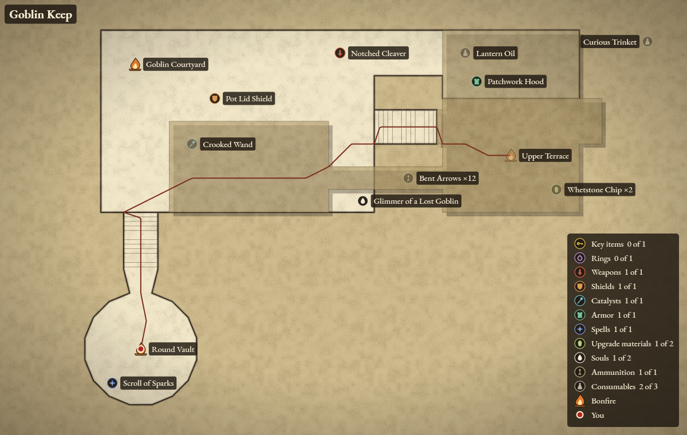
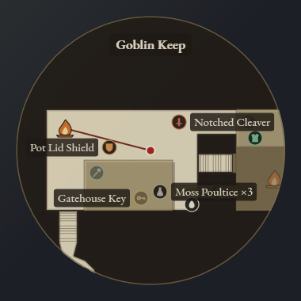
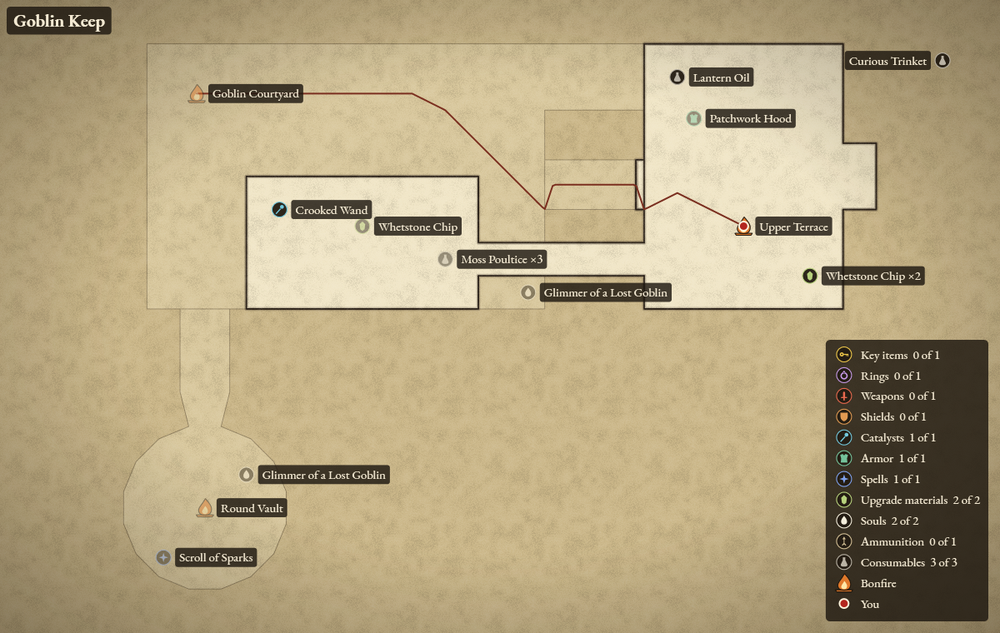

Every item lying in the area, by name, until you pick it up. Then it disappears. Bonfires, the floor you are standing on, and the trail behind you.
Items come in eleven kinds. Switch off the ones you do not care about.
A map for Dark Souls III that sits over the game and shows every item you have not picked up yet.
Download for WindowsFree and open source. It only reads the game: it changes nothing and never goes online.


Every item lying in the area, by name, until you pick it up. Then it disappears. Bonfires, the floor you are standing on, and the trail behind you.
Items come in eleven kinds. Switch off the ones you do not care about.
Areas with several storeys are split into layers. The one you stand on is drawn in ink; the ones below fade back and the ones above lie over it like tracing paper. On the full map you can page through them.

The map is a floor plan. It is drawn from the places you can walk, so it has no walls, buildings or landmarks. Step lines mark stairs and ramps.
The source is open, and how the read-only guarantee is built and tested is written down. Reading a game's memory is still something only its publisher can rule on for online play; if that worries you, play offline while you use it.
You need Windows 10 or 11 and Dark Souls III from Steam, version 1.15.2. Nothing else has to be installed. The DLC is optional: its areas are mapped when you have it.
| Key | What it does |
|---|---|
| F7 | Full map on and off |
| Ctrl PageUp / PageDown | Layer up and down on the full map |
| F8 | Settings |
| F9 | Show or hide the overlay |
| F10 | Mark a spot where something looks wrong |
Every key can be changed in the settings.
More in the readme, the changelog and the documentation. Found something wrong? Open an issue.